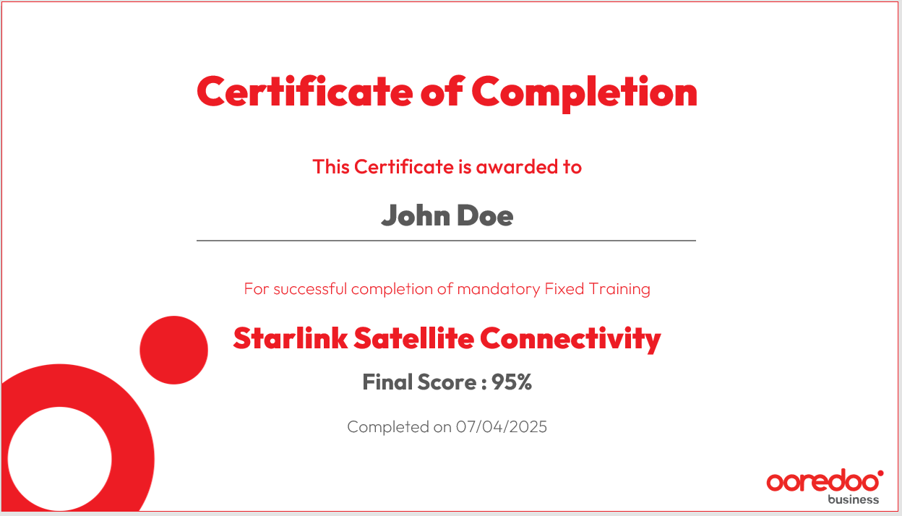

Sales Enablement
The sales team was growing in headcount but flat in performance. New reps took up to four months to become productive, top talent was indistinguishable from average performers until months into the role, and the team lacked the tools, content, and structure to perform consistently. I an initiative to build the capability, territory ownership, tooling, and executive visibility that a high-performing sales force requires — from the ground up.
B2B Sales Academy
Conceived and built Ooredoo's first structured B2B Sales Academy with a formal curriculum, product certification tracks, and performance benchmarks embedded from day one. The curriculum covered product knowledge, consultative selling techniques, CRM and SFA tool proficiency, competitive positioning, and objection handling. All training sessions were recorde and made avilable on the centralized CMS for agents to review or for agents who missed the training to catch up.
The certification model guided sales reps on structured product knowledge roadmaps with assessment on completion of each module, compressing the ramp-up period from 4 months to 2, and helped identifying star performers within the first few weeks on the job. Average individual rep performance improved by 15%, and the division sustained 5% YoY revenue growth in a saturated, highly competitive market.

SMB Portfolio Restructure — Needs-Based Architecture
Conducted a full portfolio audit combining customer journey analysis, sales conversion data, and
competitive benchmarking to identify the real decision drivers for SMB buyers. The findings revealed
that customers did not think in technology categories — they thought in business outcomes.
Redesigned the go-to-market architecture around six customer-centric need areas, each
with outcome-led messaging validated through customer beta testing. The new framework resonated
immediately — evidenced by rapid adoption by sales teams and measurable improvements in product
discoverability and conversion rates.

The restructured taxonomy was adopted as the standard across all channels — the B2B App, marketing collateral, sales toolkits, and digital self-service — creating a unified GTM message that spoke the customer's language and directly enabled the self-service product discovery experience built into the digital platform.
Territory Design & Geographic Zoning
Designed and implemented a comprehensive geographic
zoning program, dividing the metropolitan area
into 65 discrete sales zones, each assigned to a dedicated agent with full ownership
and accountability for that territory. Integrated Esri ArcGIS with the CRM to
calculate zone size, account density, and revenue potential — enabling data-driven boundary decisions
that ensured equitable workload distribution while eliminating coverage gaps and agent overlap.
Zones were configured end-to-end in the CRM and SFA platform, so all outbound calling lists and inbound
leads were automatically routed to the agent responsible for that zone — creating a seamless link
between data-driven prospecting and field follow-up. Field agents were equipped with a mobile app
enabling real-time lead notification and updates back into the CRM — capturing new customer contacts,
active
competitor products, and market intelligence as it happened, turning every
field visit into a live data collection event, keeping the CRM continuously enriched and current.

Full coverage of metropolitan area
Within three months, confirmed market coverage improved from 62% to 89%, verified by independent customer survey — a 27-point gain that directly expanded the addressable pipeline and contributed to the division's sustained revenue growth.

GIS/CRM integrated zoning
Centralized Sales Content Management
Sourced and deployed a centralized Content Management platform as the single source of truth for all
sales collateral — customer presentations, product specs, pricing sheets, promotions, training materials,
and order forms.
Drove adoption across the full sales team through structured onboarding sessions. Established a governance
process with Base Management and Product Managers to ensure content was continuously reviewed and current.
Equipped every field representative with a connected tablet, giving them real-time access to collateral
and allowing digital order signing leading to faster order processing in the field.

Sales materials in connected field tablet
Performance Tracking & Executive Reporting
Engineered automated data pipelines with CRM and Order Management developers, consolidating sales
performance
data by agent, zone, and product alongside churn and number portability metrics. Built an ETL layer
using SQL and Power Query, then developed an interactive reporting suite in Excel and Power BI to
surface trends and performance stories clearly.
Designed a weekly performance tracker consolidating KPIs covering zones, agents, and sales revenue into a
single, visually consistent deck.
Eliminated manual report preparation and established a single source of truth for strategic
decision-making across the entire SMB commercial operation.

Unified view into agents weekly performance